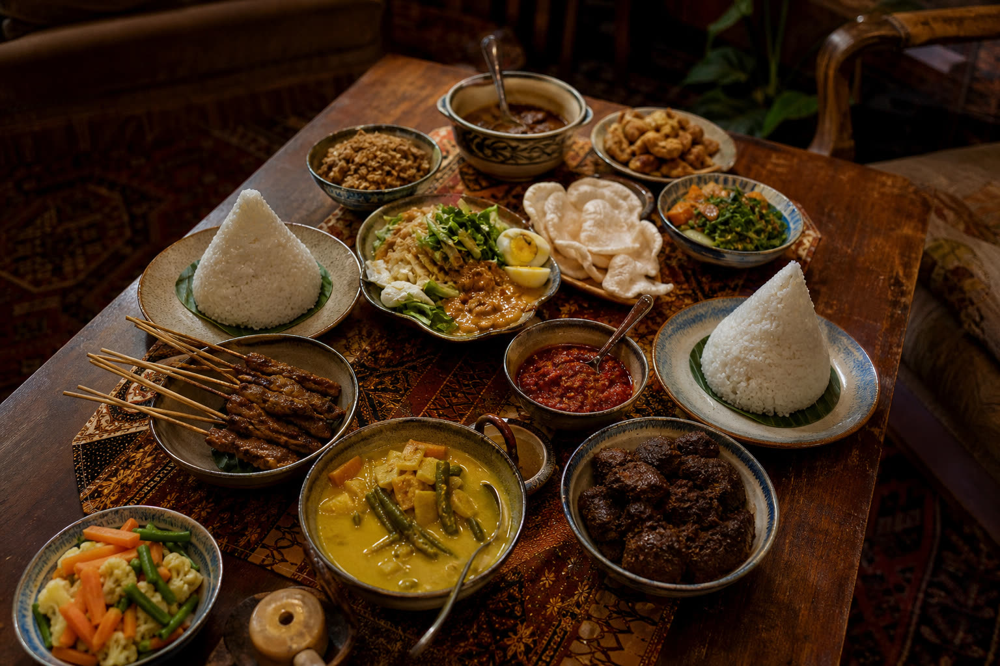
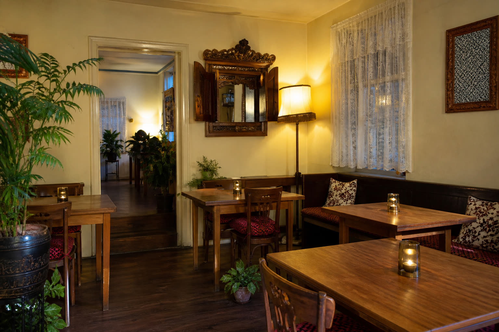
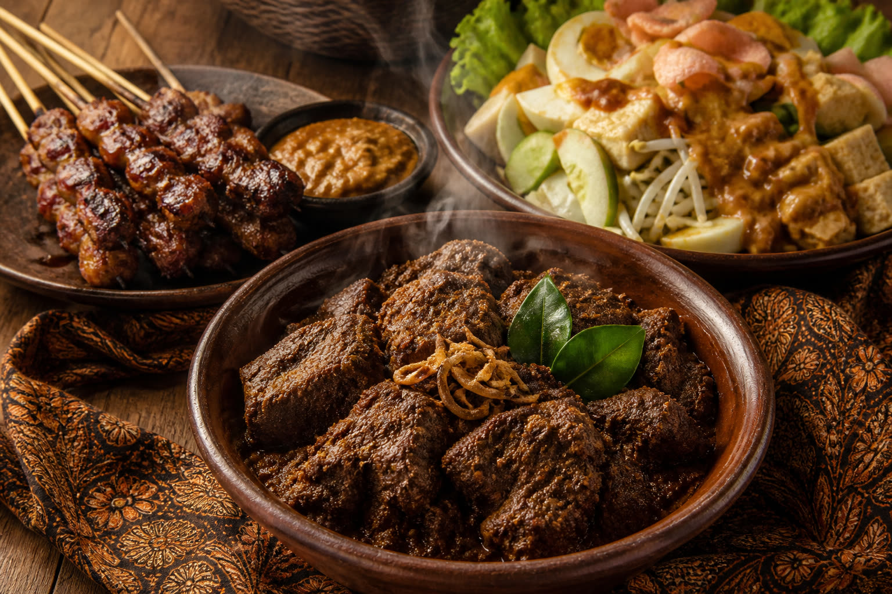

Demo · Indonesisch huisrestaurant
Puspita
Klein familiegedreven huisrestaurant in Amsterdam-Noord. Gasten komen voor rijsttafel, rendang en een warme ontvangst — bel om te reserveren.
A small family-run living-room restaurant in Amsterdam-Noord. Guests come for rijsttafel, rendang and a warm welcome — call to reserve.


Amsterdam-Noord
Huiselijk Indonesisch aan het PurmerpleinA homely Indonesian table in Amsterdam-Noord
Puspita (Indonesisch Restaurant Puspita) is een klein, familiegedreven huis-/huiskamerrestaurant in Tuindorp Nieuwendam, Amsterdam-Noord. Er is geen eigen websitetekst; gasten en gidsen beschrijven rijsttafel, een gastvrije eigenaar en een sfeer die meer huiskamer is dan toeristenterras.
Puspita (Indonesisch Restaurant Puspita) is a small, family-run huis-/huiskamer restaurant in Tuindorp Nieuwendam, Amsterdam-Noord. There is no first-party website copy; guests and guides describe rijsttafel, a welcoming owner, and a living-room mood rather than a tourist terrace.
Deze pagina is een intern OS-test-ontwerp. Niets hier is officiële restaurantcopy.
This page is an internal OS-test design. Nothing here is official restaurant copy.
- Aan tafel. Dine-in. Afhalen wordt door gasten genoemd. Geen bezorging (Foodeist Q&A, 20 feb 2026).
- On site. Dine-in. Takeaway is guest-reported. No delivery (Foodeist Q&A, 20 Feb 2026).
- Reserveren. Telefonisch, vooral in het weekend. Geen e-mail, geen sociale media op deze demo.
- Reservations. By phone, especially at weekends. No email, no social media on this demo.
- Parkeren. Gratis straatparkeren — door gasten genoemd, niet als officiële belofte.
- Parking. Free street parking — guest-mentioned, not an official promise.
Geen officiële kaart
Rijsttafel & wat gasten noemenRijsttafel & dishes guests mention
Gasten noemen onder andere
Dit is geen menukaart en geen prijslijst. Alleen gerechten die in gastreviews terugkomen.
This is not a menu and not a price list. Only dishes that appear in guest reviews.
- Rijsttafel Royal / Matahari
- Vegetarische rijsttafel
- Rendang
- Gado gado
- Sate (incl. geit)
- Nasi
- Sayur lodeh
- Soto ajam gast-genoemd
Prijzen staan hier bewust niet. Vraag bij reservering wat er die avond kan.
Prices are intentionally omitted. Ask when you call what is possible that evening.

Google via Wanderlog · RestaurantGuru
Wat gasten schrevenWhat guests wrote
“This was my first time eating Indonesian food, and I could not hope for better! Nimal was very kind during the dinner and explained the origin of most dishes.”
“A wonderful find off the beaten path of tourist places. The proprietor was super friendly and helpful and the Rijsttafel was everything I'd hoped. Highly recommend! (Note: the restaurant is cash only)”
“Ik kom al ruim 20 jaar af en toe bij Puspita… heerlijke Nasi of de geweldige rijsttafel met Rendang en Sayur Lodeh maar bovenal van de huiselijke sfeer en de vriendelijke service.”
“The owner could not have been more welcoming and with our wandering grandson to contend with he was very courteous. What a selection of authentic Indonesian food.”
Purmerplein 5 · 1023 BC
Locatie & openingstijden (bronnen verschillen)Location & hours (sources disagree)
| DagDay | Wanderlog / Google / Foodeist upd. 6 feb 2026 · 16:00–21:00 |
Eet.nu 16:00–23:00 |
|---|---|---|
| MaandagMonday | GeslotenClosed | GeslotenClosed |
| DinsdagTuesday | 16:00–21:00 | 16:00–23:00 |
| WoensdagWednesday | 16:00–21:00 | 16:00–23:00 |
| DonderdagThursday | 16:00–21:00 | 16:00–23:00 |
| VrijdagFriday | 16:00–21:00 | 16:00–23:00 |
| ZaterdagSaturday | 16:00–21:00 | 16:00–23:00 |
| ZondagSunday | 16:00–21:00 | 16:00–23:00 |
Bronnen: Wanderlog / Google (Foodeist bijgewerkt 6 feb 2026) · Eet.nu. RestaurantGuru (dinsdag dicht) en Corestaurant (09:00–21:00) zijn genegeerd als strijdig met de overige bronnen. RestaurantGuru (Tue closed) and Corestaurant (09:00–21:00) are ignored as they conflict with the other sources.
Route: Purmerplein 5, 1023 BC Amsterdam Directions: Purmerplein 5, 1023 BC Amsterdam
OSM 52.3915738, 4.9437716 OpenStreetMap
Contact
Bel om te reserverenCall to reserve
Geen e-mailadres bekend. Geen WhatsApp, Instagram of Facebook op deze demo. Telefonisch reserveren, vooral in het weekend.
No email address on record. No WhatsApp, Instagram or Facebook on this demo. Phone reservations, especially at weekends.
+31 20 636 8215 · Purmerplein 5, 1023 BC Amsterdam
FAQ
Cash of pin?Cash or card?
Gasten meldden in 2025 cash-only (Google via Wanderlog). Foodeist noemt (onbevestigd) pin boven €50. Dat is een ongeverifieerd conflict — bevestig telefonisch.
Guests reported cash-only in 2025 (Google via Wanderlog). Foodeist mentions (unverified) card above €50. Unverified conflict — confirm by phone.
Bezorgen jullie?Do you deliver?
Nee. Geen bezorging (Foodeist Q&A, 20 feb 2026). Afhalen wordt door gasten genoemd. Dine-in is de kern.
No. No delivery (Foodeist Q&A, 20 Feb 2026). Takeaway is guest-reported. Dine-in is the core.
Hoe laat sluit Puspita?What time does Puspita close?
Sluitingstijd verschilt per bron (21:00 vs 23:00). Deze demo kiest geen van beide. Bel 020 636 8215 om te bevestigen. Maandag volgens beide bronnen gesloten.
Closing time differs by source (21:00 vs 23:00). This demo does not pick either. Call 020 636 8215 to confirm. Monday is closed on both sources.
Moet ik reserveren?Should I reserve?
Telefonisch reserveren wordt aangeraden, vooral in het weekend. Gebruik 020 636 8215.
Phone reservations are recommended, especially at weekends. Use 020 636 8215.